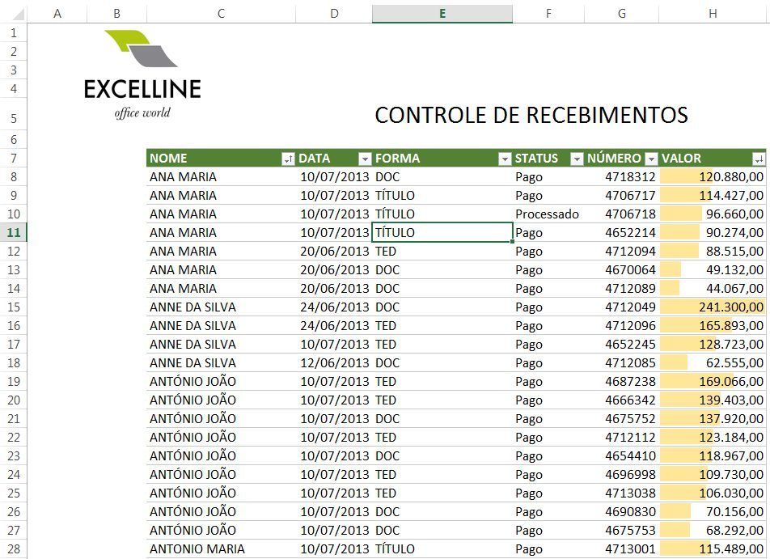
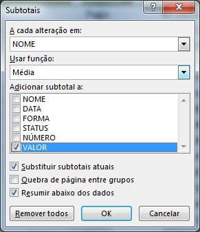
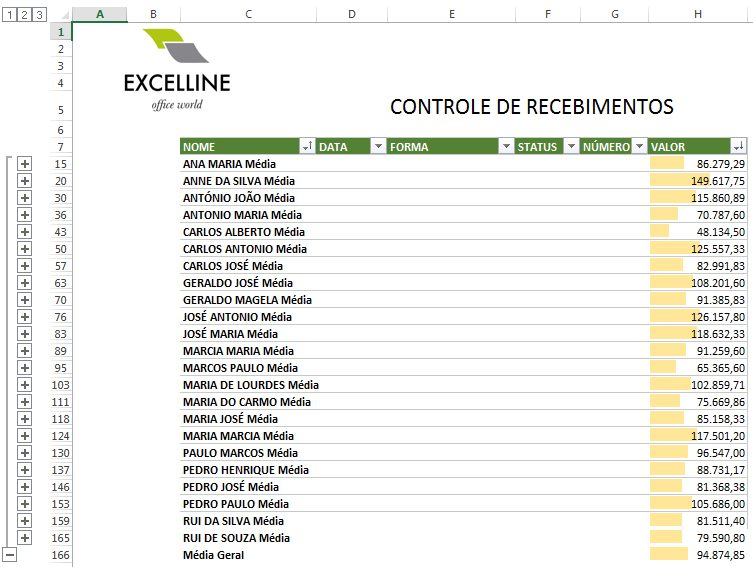

O recurso SUBTOTAL é muito útil quando precisamos, a partir de uma lista, gerar uma quebra a cada mudança de elemento e subtotalizar com alguma função matemática ou estatística. O exemplo é o de uma empresa que controla seus recebimentos e quer saber o valor médio recebido de cada cliente.
Baixe a planilha do exercício: modelo-excel-subtotais.xlsx. Ela traz os exemplos deste capítulo com as fórmulas funcionando: altere os valores azuis e veja o resultado. Traz a lista fora de ordem para você praticar o recurso Subtotal e o resultado pronto, com os níveis 1, 2 e 3.
O objetivo
A tabela de recebimentos tem cerca de 135 registros e queremos organizá-la para que os registros apareçam por cliente e, dentro de cada cliente, em ordem decrescente de valor e para que toda vez que o cliente mudar o Excel insira uma linha com a média dos pagamentos dele.
Passo 1: classificar
O Subtotal depende da ordenação, porque só enxerga as quebras se os iguais estiverem juntos. Por isso o primeiro passo é DADOS, CLASSIFICAR, com o nome do cliente como primeira chave e o valor em ordem decrescente como segunda.

Passo 2: gerar os subtotais
Com uma célula da lista selecionada, abra DADOS, SUBTOTAL. A leitura da janela é "a cada alteração em NOME, calcule a MÉDIA do campo VALOR" e os elementos marcados em vermelho podem ser trocados.

Depois do OK o Excel analisa a lista, identifica as mudanças de nome, agrupa os dados e insere uma linha para cada resultado. A planilha ganha também os botões de nível no canto superior esquerdo, que mostram todos os registros (nível 3), só os subtotais com o total geral (nível 2) ou apenas o total geral (nível 1).

Remover e variar
Os subtotais saem a qualquer momento em DADOS, SUBTOTAIS, REMOVER TODOS. E para subtotalizar por outra coluna, como a forma de pagamento, basta classificar antes por essa coluna e repetir o procedimento com ela como base.
Por trás do recurso está o agrupamento de dados, tema do capítulo anterior, que explica como o Excel organiza os registros em níveis.
Alternativas
Para somar ou contar por critério sem reorganizar a lista, veja SOMASE e CONT.SE. E para explorar vários cruzamentos de uma só vez, a tabela dinâmica costuma ser mais rápida.
Veja também. Os subtotais criam níveis que se recolhem e expandem, como no agrupamento de dados. Quando a base cresce, a tabela dinâmica faz o resumo sem reordenar a lista, e uma lista bem formada é pré-requisito de todos esses recursos.
Comentários
Dúvida, discordância ou outro ponto de vista? Escreva aqui e eu respondo.